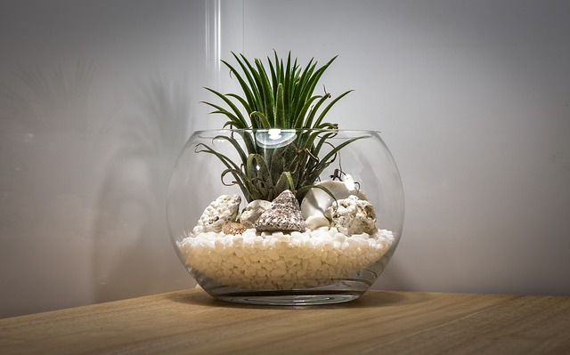
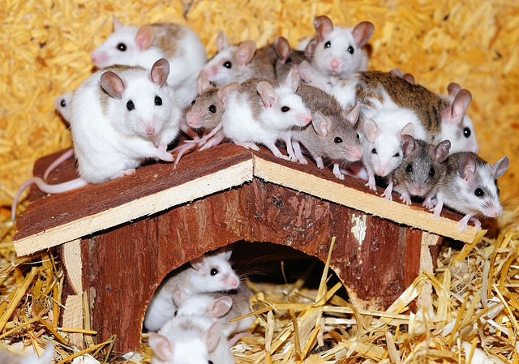
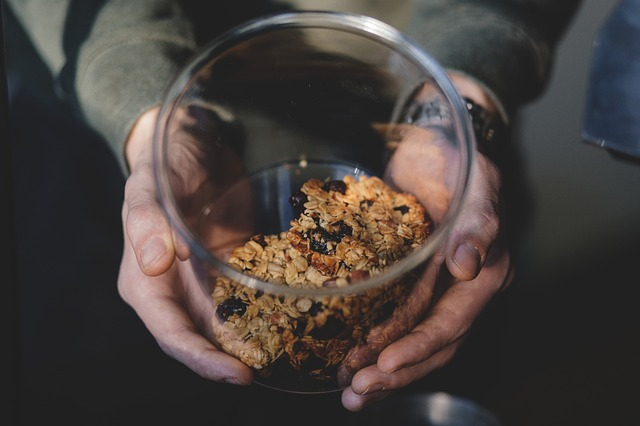

Snake & Fish Products
Here in New Hampshire, we felt it vital to have a fish section, as well as a snake section. Even though these pets tend to be less popular, we have a full line of everything you may need!
Tanks (Both Snake and Fish)
|  | The Styler | This is more of a fashion forward tank. It can be used anywhere around the house, and is great for both snakes and fish. |
| Commercial Tank | This is a much larger tank. It is usually purchased by companies or places of work that want a fish tank to accompany their business. |
Food
|  | Baby Mice | If you're trying to feed the snake of the family, DHOP offers baby mice for sale and consumption. | |
|  | Organic Fish Flakes | Organic fish flakes from right here in New Hampshire. They lead to a long and healthy life for your fish. |